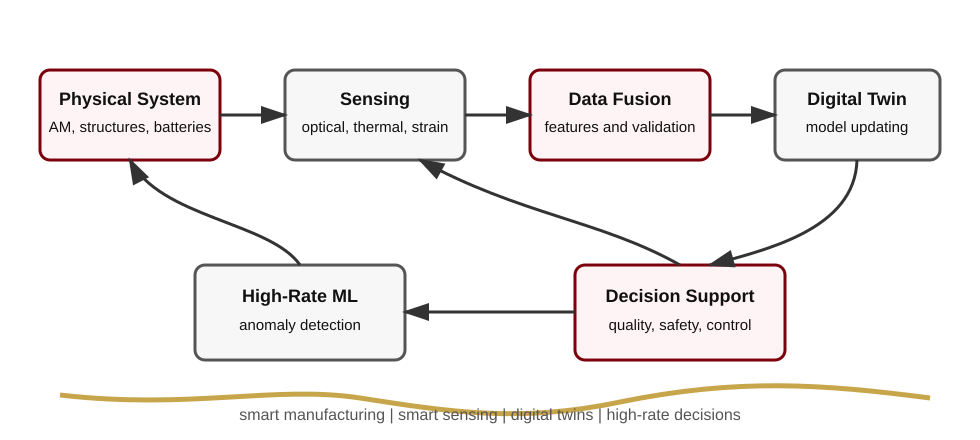

Publications and preprints
Academic research website
Welcome
Welcome to the research website of Emmanuel A. Ogunniyi, Ph.D. The group develops experimental and computational methods for smart manufacturing, structural health monitoring, digital twins, high-rate machine learning, and resilient sensing systems. The work connects additive manufacturing, flexible electronics, finite element model updating, automation, and real-time decision support for engineered systems.

Citations
h-index
Undergraduate mentees
Research Themes
In-situ manufacturing monitoring, smart materials, digital twins, high-rate machine learning, and battery safety.
View research areasPublications
Browse journal articles, preprints, conference proceedings, invited talks, and theses.
View publicationsProjects
See current and contributed grants in continuous fiber printing, digital twins, high-rate ML, and sensing.
View projectsResearch Snapshot
Current Roles
- Research Assistant Professor, School of Science and Engineering, Benedict College.
- Research Associate, Department of Mechanical Engineering, University of South Carolina.
Education
- Ph.D. Mechanical Engineering, University of South Carolina, 2025.
- M.Sc. Mechanical Engineering, University of South Carolina, 2023.
- B.Sc. Mechanical Engineering, Federal University of Technology, Akure, 2018.
Public Profiles and Repositories
- GitHub: github.com/emysupa
- ORCID: 0000-0001-5456-5929
- Google Scholar: Emmanuel A. Ogunniyi
- LinkedIn: eaogunniyi
News
The website content was refreshed from the current CV and includes updated roles, publications, projects, teaching, and mentoring information.
New NSF Excellence in Research project begins: real-time monitoring and structural validation for continuous fiber printing.
Journal publications listed in Journal of Power Sources and Additive Manufacturing.